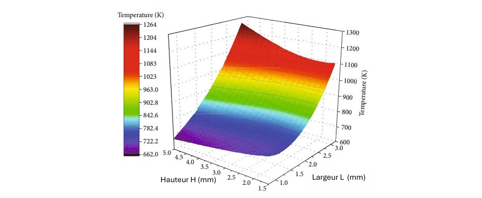

Ce portfolio rassemble mes projets de stage ainsi que des études personnelles que j'ai menées pour développer mes compétences.
Concevoir (partie mécanique et software) une station de mesure de raideur des couronnes do doigt des nouvelles séries de disjoncteurs live tank, cette station à pour objectif de s’assurer de la conformité des couronnes de doigt après leur montage dans le carter.
Ma responsabilité consiste à élaborer la station dans sa globalité, tant au niveau mécanique que logiciel. J'ai commencé par définir les besoins avec les différentes parties prenantes (service qualité, opérateurs, bureau d'études). Ces besoins ont été traduits en exigences au niveau système, puis décomposés en exigences au niveau des sous-systèmes jusqu'à arriver aux exigences des composants (conception descendante). Une fois les exigences au niveau des composants définies, j'ai entamé la phase de conception tout en travaillant parallèlement avec mon tuteur à l'identification des simulations nécessaires pour valider les exigences de précision des mesures. Après la validation des dimensions, j'ai réalisé la mise en plan, qui a ensuite été envoyée au service des achats. la partie logiciel a été faite en parallèle, j’ai développé une interface graphique pour la visualisation de donnés et le pilotage du détecteur d’effort et je l’ai synchronisé avec la base de donnés du site pour l’enregistrement des donnés.
Figure 1: Conception CAO de la station
Figure 2: interface graphique , Data aquisition software
Dimensionnement d’arbre de transmission de puissance qui a été redésigné, pour l’ouverture des disjoncteur GCB (Ground circuit breaker) l’ancien système étant couteux et sensible aux défauts de coaxialisé.
J’ai dimensionné un nouveau design d’arbre. J’ai commencé par simuler les différentes propositions qui ont été faites par un collègue. J’itérait les différents dimension et apportait des modification mineurs de dimension afin d’arriver sur le facteur de sécurité demandé sans le dépasser. Le re-design visait à simplifier des usinages et de surtout diminuer le matériau, ce qui coutait cher à l’entreprise
Figure 3: Notes de calcul
Déterminer la contrainte mécanique dans la chambre à gaz due à la pression de gaz sf6. Qui a été augmenté afin d’augmenter la durée de vie des tulipes. On cherche à s’assurer qu’on reste toujours au-dessus d’un facteur de sécurité de 5 selon (CDC 912625/CODAP)
la contrainte à été appliqué au parois intérieurs afin de simuler une pression statique de p=1.6MPA, matériaux : A-S7G03.
Figure 4: Notes de calcul
Pendant leur fonctionnement, les moteurs à fusée en particulier la chambre de combustion du moteur subit des température très grande. Avec l’augmentation de la température, les propriétés mécaniques des métaux se dégradent, notamment leur limite d’élasticité. Pour remédier à ce problème, il existe deux méthodes qui permettent de contrôler la température de la chambre. La première : refroidissement ablatif, consiste en la désintégration des parois intérieures de la chambre, emportant avec elle une partie de la chaleur. Toutefois, cette méthode est destructrice et suppose que le moteur ne sera pas réutilisé. La deuxième méthode, et la plus couramment utilisée, est le refroidissement régénératif. Elle s’effectue par le passage d’un fluide cryogénique à travers des canaux gravés à l’intérieur de la chambre de combustion, permettant une dissipation efficace de la chaleur.
Le but est d'évaluer l’effet de la variation de la largeur L et Hauteur H des canaux de refroidissement rectilignes sur la température maximale du mur intérieur de la chambre de combustion, on cherchera également à trouver un optimum , avec comme fonction objective la température maximale du mur intérieur de la chambre de combustion, et variable d’optimisation : L, H , avec L entre 0.8 et 3.0mm, H entre 1.5 à 5.0mm, l’épaisseur du mur est gardée constante à 10mm la distance entre le canal et la paroi intérieur est gardée constante à 3mm
Figure 1: Conception des canaux de refroidissement (CAO assemblage chambre de combustion + tuyère)
Figure 2: Paramètres de l’étude
Au début, on commence avec une épaisseur de mur intérieur ,une largeur de canaux de refroidissement et une hauteur de 1 mm, 1.8 mm, and 3.5 mm, respectivement. On effectue le maillage avec une inflation au niveau de la couche limite de la chambre de combustion afin de capturer le gradient de température et de vitesse au niveau de la couche limite idem pour les canaux de refroidissement , un maillage de la partie solide à également été fait
Figure3 : Maillage zone fluide + solide
Après simulation sur ansys fluent+ ansys thermal on obtient les résultats suivants :
Figure 4 : donnés thermiques du gaz dans la chambre de combustion sur quelques sections
Figure 5 : Distribution de température dans le mur de la chambre de combustion, coupe effectuée entre 2 canaux
Le pic de température est atteint juste avant la section la plus étroite, à proximité de la zone de contraction du col de la chambre de combustion. Après variation des paramètre L-H en incréments de 0,01mm et entre 1.5 à 5.0mm pour la hauteur et 0.8 à 3.0mm pour la largeur On obtient:
Figure6 : Température maximale de la chambre de combustion en fonction de L et H
L’optimum est à H=5mm et L=0.8mm, avec une température minimale de 586.6 K
Mon interprétation : Lorsque la largeur des canaux est augmentée, le fluide de refroidissement absorbe une grande quantité de chaleur à l'entrée de la chambre de combustion, en raison de la surface d'échange importante, là où son effet n'est pas pleinement nécessaire. En atteignant le col de la chambre de combustion, où la température est la plus élevée, le fluide de refroidissement a déjà une température importante, ce qui réduit son efficacité à absorber rapidement la chaleur. Réduire la largeur tout en augmentant la hauteur permet de conserver un flux massique constant et de retarder l'absorption de chaleur jusqu’au col, là où elle est le plus nécessaire.
Étant un grand fan du projet de la fusée Starship mené par SpaceX, je suis de près, depuis 2019, le développement en détail. Une des grandes phases de ce développement est le test sous pression des réservoirs de LOX (oxygène liquide) et de méthane. Le but est de remplir le réservoir d’azote liquide cryogénique et d’augmenter la pression dans le réservoir jusqu’à rupture afin d’analyser le mode de défaillance. Anticipant ce test et ayant accès à un plan du réservoir publié par un employé sur internet, avec les cotes et l’épaisseur de la tôle, j’ai reconçu le réservoir et exécuté une simulation de pression hydrostatique pour tenter de prédire la zone de rupture ainsi que la pression critique en utilisant la méthode des éléments finis.
Figure 1: comparaison entre simulation et résultat de tests
Rupture réelle du réservoir : 7.6bar, rupture prédite : 8.1 bar ( probablement dû à la température qui étais plus grande dans les vrais tests. Le limite de rupture d’acier inoxydable augmente plus la température est basse) -zone de rupture prédite par la zone rouge (plus grande contrainte). Dans le vrai test on a rupture exactement dans la zone prédite par la méthode en éléments finies, la fin de l’arc et début de zone linéaire
le fait de voir le test on live et de prédire exactement la zone de rupture était assez impressionnant